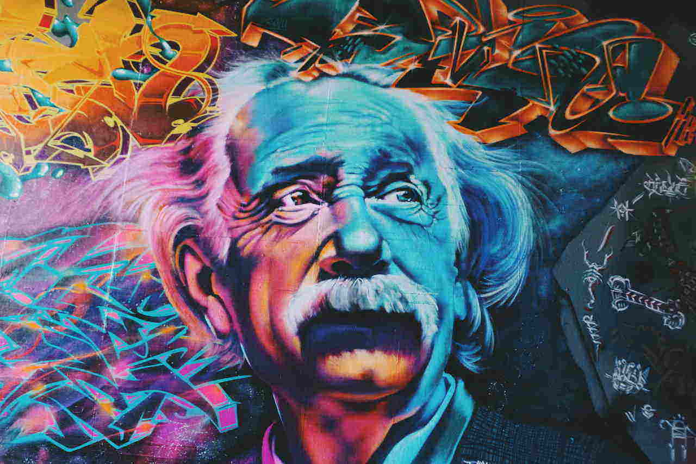
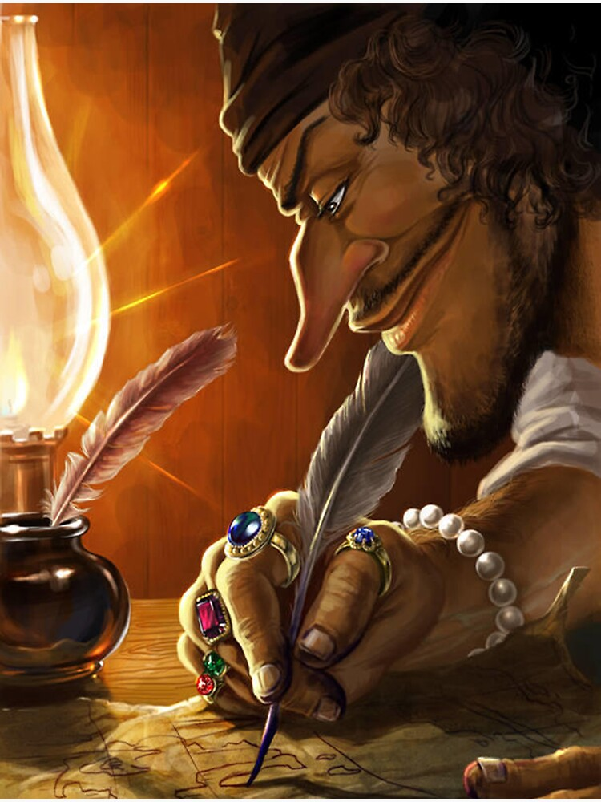

Desde pequeno siempre tuve una conexion especial con el arte, aunque no lo comprendia del todo en aquel entonces. Las paredes de mi habitacion eran mis primeros lienzos, donde daba rienda suelta a mi imaginacion sin medida. Pero lejos de verlo con el tiempo, mi curiosidad por el color, la textura y las formas se transformo en una pasion que alimenta cada dia mi forma de mirar el mundo. Ahora el arte no es solo un pasatiempo, sino una busqueda constante de las personas que me rodean y que me inspiran. Cada trazo, cada imagen y cada composicion es una manera de contar historias, de crear espacios y de seguir creciendo a traves de lo que hago.